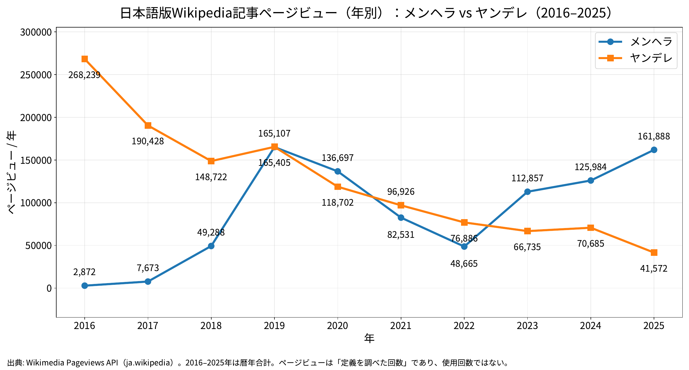
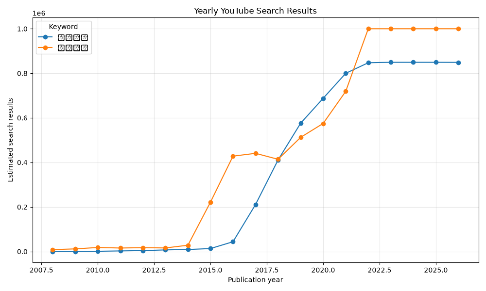

① 日本語版Wikipediaの記事ページビュー(2016〜2025年)

グラフの見方
- 青が「メンヘラ」、橙が「ヤンデレ」の記事ページビュー(年間)です。
- 2016年はヤンデレ(268,239)が圧倒的で、メンヘラは2,872でした。
- 2019年に両者はほぼ同じ水準(約16.5万)で並びます。
- 2022年以降はメンヘラが増え続け、2025年は161,888に。一方ヤンデレは減少し、41,572になりました。
- ページビューは「言葉の意味を調べた回数」であり、使われた回数ではありません。
② YouTubeの年別検索結果数(公開年別)

グラフの見方
- 各年に公開された動画のうち、キーワードに該当するものの推定件数です。
- 2015年ごろまでは橙(ヤンデレ)が先行し、2016〜2017年に大きく伸びました。
- 2018年に一度並び、その後は青(メンヘラ)が2021年ごろまで上回ります。
- 2022年以降は横ばいで、橙が100万、青が約85万で頭打ちです。これは推定値の上限によるもので、実際の動画数が止まったとは限りません。